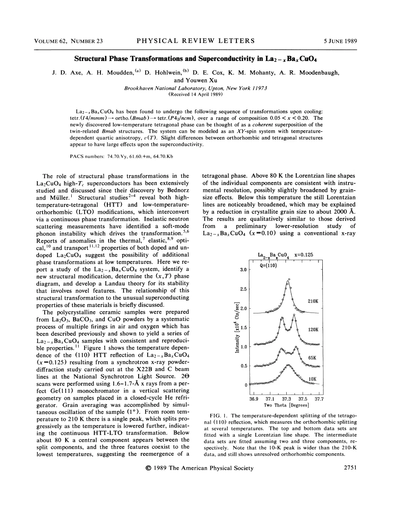
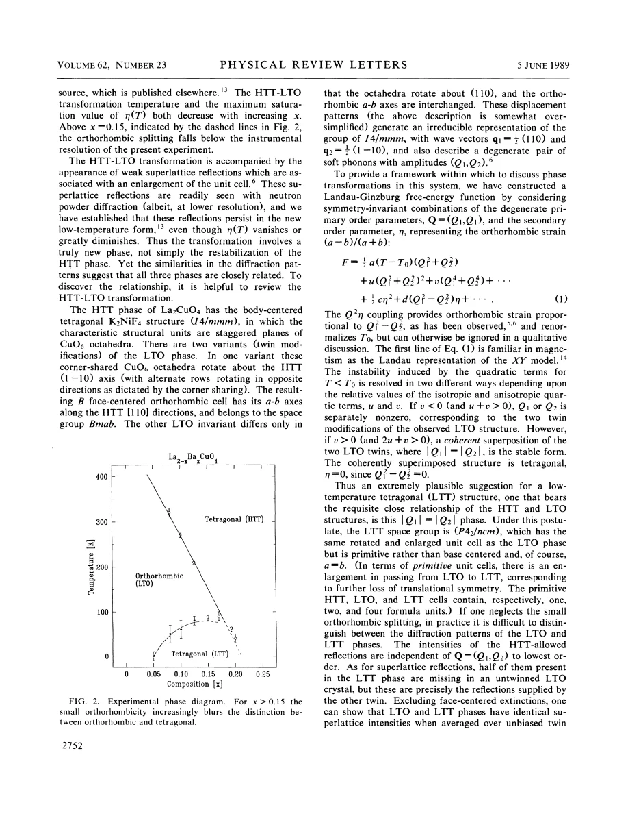
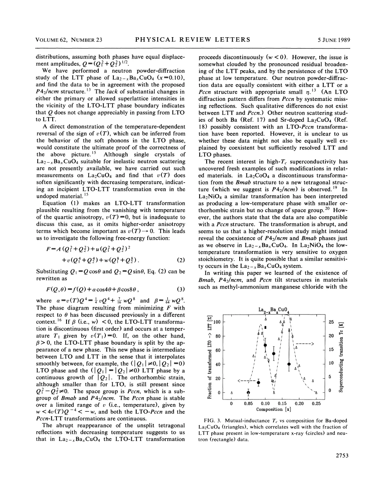

experiment and theory · Axe · supplied source 1989
Structural Phase Transformations and Superconductivity in La₂₋ₓBaₓCuO₄
Low-temperature diffraction connects a change in LBCO tilt symmetry with the superconducting anomaly, while leaving its microscopic cause unresolved.
The question: What structural change accompanies the unusual superconducting composition dependence of LBCO?
Before you start: the few terms you need
- HTT/LTO/LTT: high-T tetragonal, low-T orthorhombic and low-T tetragonal tilt structures
- soft mode: a lattice vibration whose energy decreases near an instability
- Landau model: symmetry-based free energy in structural order parameters
See → explain → test
Understand it in four pictures.
Picture 1 / 4
Cooling produces a new central component
Look for: Follow the same diffraction line through the orthorhombic splitting and lower-temperature change.
Swipe across the picture to read every label, or enlarge it below.
- Single HTT reflection
- Split LTO reflections
- New central low-T component
Teaching measurement sequence. The source's low-temperature patterns include coexistence and broadening.
A central low-temperature component appears while broadened orthorhombic components can persist.
Check the original: PDF p. 1
Picture 2 / 4
Change direction without erasing tilts
Look for: Compare HTT-plane diagonal and bond-axis tilt directions.
Swipe across the picture to read every label, or enlarge it below.
- LTO diagonal tilt axis
- LTT bond-axis tilt
Axes referenced to HTT Cu–O bonds. Alternating LTT layer axes are not shown in this projection.
LTT is a coherent structural pattern, not a random mixture of orthorhombic twins.
Picture 3 / 4
Anisotropy selects the route
Look for: Compare direct first-order switching with an intermediate lower-symmetry structure.
Swipe across the picture to read every label, or enlarge it below.
- Direct LTO → LTT
- LTO → Pccn → LTT
Conditional alternatives of the source's symmetry model; no invented phase boundary.
Higher-order anisotropy can determine whether the tilt direction jumps or passes through Pccn.
Picture 4 / 4
Correlation is a clue
Look for: Compare LTT fraction with Tc near the one-eighth anomaly.
Swipe across the picture to read every label, or enlarge it below.
- LTT fraction changes
- Bulk Tc is depressed
- Mechanism remains open
The 1989 paper does not directly measure stripe order.
The structural–superconducting correlation motivates mechanisms but does not prove the microscopic cause.
Predict before revealing
A low-temperature fundamental line becomes unsplit but superlattice intensity persists. What is plausible?
Choose an answer, then compare the reasoning.
Fundamental splitting measures orthorhombic strain; retained tilt superstructure distinguishes LTT from untilted HTT.
Read the answer
A tilted tetragonal structure can replace the tilted orthorhombic structure Fundamental splitting measures orthorhombic strain; retained tilt superstructure distinguishes LTT from untilted HTT.
Go deeper Follow the full argument
The low-temperature diffraction discovery
Axe and colleagues investigate ceramic La₂₋ₓBaₓCuO₄ across roughly 0.05 < x < 0.20. For x = 0.125, a high-temperature reflection first splits below the HTT–LTO transition near 210 K. Below about 80 K, a central component appears between the orthorhombic pair. All three features can remain visible or unresolved at lower temperatures, and their widths increase. The authors estimate a structural coherence scale of order 2000 Å from broadening. They identify a new low-temperature tetragonal modification, but emphasize phase coexistence and assignment limitations. Superlattice scattering remains important: the low-temperature tetragonal pattern is not simply a return to the high-temperature untilted structure. Read the whole diffraction pattern and its temperature evolution rather than assigning symmetry from a central fundamental reflection alone.
Two tilt components organize the structures
The structural model uses two soft-mode coordinates Q₁ and Q₂ corresponding to tilts around the two diagonal axes of the HTT CuO₂ plane. LTO selects one component, while the proposed LTT state has equal magnitudes of both. In physical bond coordinates this rotates the tilt axis from a diagonal to a Cu–O bond direction; adjacent LTT layers choose orthogonal axes. A coherent combination of the two components differs from an incoherent collection of twin domains. The total tilt magnitude need not change substantially at the lower transition. Indeed the lack of a large change in allowed superlattice intensities supports an orientation change with a similar amplitude. This distinction separates direction selection, magnitude, strain and domain coexistence, which otherwise become conflated in the phrase lattice distortion.
Why higher-order terms matter
A quartic Landau model can favor either a single-component LTO state or an equal-component LTT state through the sign of its anisotropy. Near the point where that anisotropy changes sign, higher-order terms become important. Writing the tilt vector by magnitude Q and angle θ yields angular terms proportional to cos(4θ) and cos(8θ). For one sign of the eighth-order term, the preferred direction switches discontinuously. For the opposite sign, an intermediate Pccn structure with two unequal nonzero components can intervene and rotate smoothly toward LTT. This is a symmetry-based explanation of possible transition routes, not a calculation of the electronic cause of the anisotropy's temperature dependence. The observed abrupt appearance favors a first-order interpretation, but peak broadening and residual LTO complicate a definitive assignment.
The superconducting correlation
The superconducting transition temperature has two composition maxima and a strong depression near x ≈ 0.12. The amount assigned to the LTT phase is correlated with the loss of bulk superconductivity, especially on the low-doping side. Resistive onset can still occur around 30 K even where the main magnetic transition is low. Thus this result connects structural symmetry to the bulk anomaly without making every indication of superconductivity disappear. The authors were unable to obtain a clean single-phase LTT comparison that would isolate structure completely from coexistence. Their central electronic question remains why a small orientation change of tilted octahedra has such a large superconducting consequence. Charge and spin stripe measurements that later addressed this question are absent from this 1989 experiment.
What the phonons do and do not establish
The soft-mode picture motivates an experimental test: a temperature-dependent transverse tilt vibration should reflect changing orientational anisotropy. Suitable LBCO single crystals were unavailable for the needed inelastic measurements, so the authors examined La₂CuO₄ and found substantial softening consistent with an incipient lower structural instability. This is supporting context, not direct phonon proof of the proposed LBCO transition mechanism. They also discuss ambiguities between LTT and Pccn assignments in broadened powder data and related materials. The useful conclusion is therefore a structural framework with explicit tests and uncertainties. Later work can refine the phase assignments or reveal electronic order, but should not silently insert those later results into the evidence of this early paper.
Translate the mathematics Key equations and symbol meanings
Q₁ = Q cos θ; Q₂ = Q sin θ
Symbols: Q: tilt-mode magnitude; θ: direction in the two-component mode space.
Separates how much the octahedra tilt from which structural direction they choose.
F(Q,θ) = f(Q) + α cos 4θ + β cos 8θ
Symbols: α, β: anisotropy coefficients determined by the Landau expansion.
The higher-order angular term distinguishes a direct jump from an intermediate Pccn route. It is a phenomenological structural model.
Read the evidence A guided look at the original figures

Open the full original page ↗

Open the full original page ↗

Open the full original page ↗
What this paper does—and does not—establish
- Powder coexistence and broadening leave LTT/Pccn assignment nuances.
- No isolated single-phase LTT superconducting comparison was obtained.
- Supporting phonon softening was measured in La₂CuO₄, rather than the unavailable LBCO crystals.
Explain it back.
Try answering aloud before opening the explanation.
How does LTT differ from twinned LTO?
It is a coherent equal-component tilt pattern, rather than an incoherent mixture of single-component domains.
Why include cos 8θ?
Near weak quartic anisotropy, it can control whether the direction changes discontinuously or through Pccn.
Did the experiment observe electronic stripes?
No. It measured lattice transformations and their superconducting correlation.
Connect the next paper.
Source version, reading coverage and preservation
Complete four-page PDF text read; rendered pages 1–3 inspected for diffraction, structural phase boundaries, equations and the structural–Tc comparison.
Reviewed body pages: 1, 2, 3, 4. External references are not independently re-read; no separate supplement supplied.
Original file retained byte for byte. SHA-256: 559c45049f444d0e265edeb58ebb032417fab67493c16dcaf29cbed516ac271d
Filename: PRL - Axe - Structural transitions and superconductivity in LBCO - 1989.pdf.